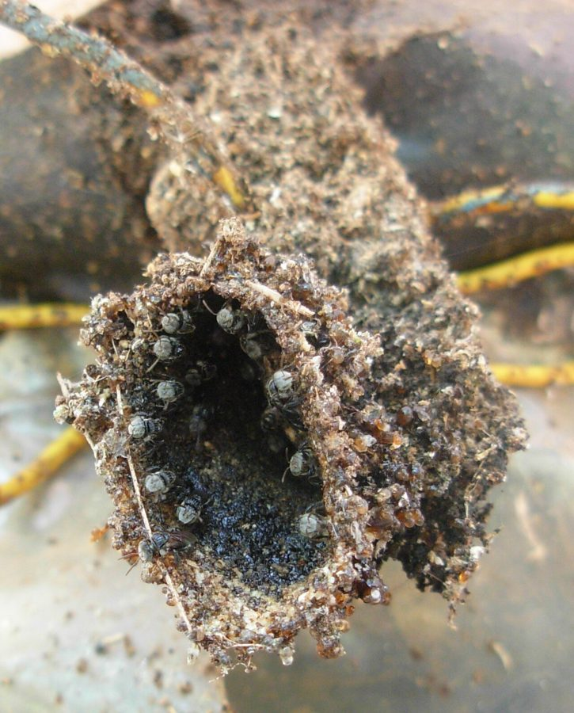

छोटी मधुमक्खीIndian Stingless Bee
Tetragonula iridipennis · Apidae · INS-0091

- Scientific nameवैज्ञानिक नाम
- Tetragonula iridipennis Smith, 1854
- Familyकुल
- Apidae
- Hindiहिंदी
- छोटी मधुमक्खी
- Local namesस्थानीय नाम
- chhoti madhumakkhi, chhoti makkhi, dammer bee, trigona, deshi makhi
- Status hereयहाँ की स्थिति
- native
- Movementआवागमन
- Resident, here all year
- IUCNIUCN
- not evaluated
- Reviewसमीक्षा
- audited and independently read
When to look कब देखें
Present all year.साल भर मौजूद।
Uses and possibilities उपयोग और संभावनाएँ
“Traditional medicine” means a documented traditional use, not a claim that it works. Nothing on this page is medical advice.
Drawn from the documented uses in the profile below, where each is labelled traditional, current or a research lead. All uses →
Tell it apart from इनसे अलग पहचानें
छोटी मधुमक्खी / Indian Stingless Bee
Tetragonula iridipennis Smith, 1854 — Apidae
छोटी मधुमक्खी — पूर्वी उत्तर प्रदेश के बागों, घरों और खेतों में पाई जाने वाली एक देशी मधुमक्खी है, जो घुमड़ते हुए उड़ने और अपनी मीठी शहद के लिए जानी जाती है। इसे स्थानीय रूप से "छोटी मक्खी" कहा जाता है क्योंकि यह शहद की बड़ी मधुमक्खी (Apis cerana) से छोटी होती है। इसकी सबसे अद्भुत बात यह है कि इसके पास डंक नहीं है — इसीलिए इसे "stingless bee" कहते हैं। यह भीड़ में रहने वाली एक सामाजिक मधुमक्खी है, जिसमें एक रानी, सैकड़ों मजदूर मधुमक्खियाँ और नर होते हैं। इसकी शहद में औषधीय गुण होते हैं और ग्रामीण इलाकों में सदियों से इसे पारंपरिक दवा के रूप में इस्तेमाल किया जाता है।
Quick Identification त्वरित पहचान
| Feature | Description |
|---|---|
| Size | Very small bee; body length 3–4 mm; much smaller than honeybee |
| Colour | Predominantly black or very dark brown with sparse golden hairs on the thorax |
| Body shape | Compact, stocky build; wings appear darker than Apis bees |
| Wings | Narrow, translucent; iridescent sheen visible in certain lights |
| Stinger | Completely absent — cannot sting (hence "stingless") |
| Nest | Small, hidden colonies in cavities of trees, walls, or artificial hives |
| Foraging | Buzzes audibly while visiting flowers; forages during warm, sunny hours |
Field tip: A tiny, dark bee that buzzes loudly while moving from flower to flower in a garden or orchard, smaller than the common honeybee and moving in a more erratic flight pattern. Watch flowers in fruiting trees (mangoes, cashews) where many cluster together to feed on pollen.
हिंदी — कैसे पहचानें: बहुत छोटी, काली मक्खी, भनभनाहट करते हुए। डंक नहीं है, शहद देती है।
Morphology आकारिकी
Biometrics:
| Measurement | Range |
|---|---|
| Body length | 3.0–4.5 mm |
| Wing length | 2.0–2.5 mm |
Morphology: Compact body, completely black or very dark brown. The head is proportionally large. Compound eyes are small and simple ocelli are three. The antennae are short, filiform, and dark. The thorax is robust and covered with sparse golden setae. The abdomen is tapered. Legs are relatively short and stout, with well-developed corbiculae (pollen baskets) on the hind legs. Most notably, the stinger is vestigial and incapable of piercing skin.
Sexual dimorphism: Queens are slightly larger than workers. Males (drones) are extremely rare and short-lived.
Behaviour & Ecology व्यवहार और पारिस्थितिकी
A eusocial bee forming perennial colonies of 300–800 individuals, much smaller than honeybee colonies. Colonies maintain a single queen and cohorts of long-lived workers. Unlike honeybees, stingless bees do not produce a defensive venom and instead defend their nests by crowding intruders or biting and attaching themselves. They practice "meliponiculture" (traditional beekeeping), thriving in various habitats from gardens to secondary forests.
Nesting sites are chosen carefully — typically in cavities at least a meter above ground. Colonies produce honey throughout the year in warm zones, with reduced production during cool months.
हिंदी: भीड़ में रहती है, एक रानी होती है। अपने घर की रक्षा काटकर करती है, डंक नहीं है। साल भर शहद बनाती है।
Life Cycle / Phenology जीवन चक्र
| Stage | Event |
|---|---|
| Egg | Laid by the queen in wax cells |
| Larva, 8–12 days | Fed on beebread (pollen-honey mixture) |
| Pupa, 10–14 days | Sealed cell; development continues |
| Adult worker | Emerges; lifespan 4–6 months |
| Adult queen | Emerges; lifespan 2–3 years |
| Brood production | Continuous year-round in warm months; peaks post-monsoon |
हिंदी: साल भर अंडे देती है गर्मी में, ठंड में कम देती है।
Host Plants or Prey आहार
Pollen and nectar sources:
- Mango (Mangifera indica), cashew (Anacardium occidentale), litchi, palm flowers, cucurbits, and wild flowers.
- Especially active on flowering crops and trees during fruiting seasons.
No predation: Adult workers feed only on nectar and pollen; they are herbivorous, unlike some other bees.
Predators / Natural Enemies शत्रु
- Parasites: Fly larvae (Pseudohypocera flies) parasitize the pupae.
- Predators: Spiders, dragonflies, and wasps catch foraging workers.
- Robber insects: Ants and hive beetles may raid weak colonies.
Agricultural / Human Relevance कृषि प्रासंगिकता
Pollination and yield. Stingless bees are highly effective pollinators of cucurbits, pulses, and tree crops. In one study in India, flowers pollinated by stingless bees set significantly more fruit than those pollinated by honeybees alone.
Traditional honey use. The honey of stingless bees has been used in village medicine systems for centuries. Ethnobotanical surveys in eastern Uttar Pradesh document its use as an internal remedy for sore throat, cough, and digestive complaints, and topically on wounds and burns. It is typically diluted with water or added to herbal decoctions. The honey is thinner and less sweet than honeybee honey, with a slightly acidic taste.
Today. Meliponiculture — the traditional rearing of stingless bees in wooden boxes or hollow logs — is being revived as a sustainable livelihood in several villages of UP. Several farmer groups maintain small apiaries of 5–20 colonies.
Research direction. Wild colony conservation, optimal hive design for village conditions, and the antimicrobial properties of stingless bee honey in relation to local plant sources are active research leads.
हिंदी: फूलों को परागकण देती है और फसल अच्छी होती है। शहद बहुत मीठा और पारंपरिक दवा है। गाँव के लोग इसे पानी में घोलकर या दवाई में मिलाकर गले के दर्द और खाँसी में देते हैं।
Expected Locally स्थानीय रूप से अपेक्षित
Not a field record. Written from published accounts for eastern Uttar Pradesh. No confirmed local sighting yet — if you have seen it, that is what the atlas needs.
अभी तक स्थानीय पुष्टि नहीं। यह विवरण प्रकाशित स्रोतों से है, किसी अवलोकन से नहीं।
Expected in village gardens and orchards where flowering trees and plants are present year-round. Colonies nest in tree cavities, in walls, or in traditional wooden hives. Listen for the characteristic buzzing of many small bees foraging on flowers, especially during mango and cashew flowering. A record would be a photograph of a colony entrance or foraging bees with place and date.
Distribution वितरण
Global range: South and Southeast Asia, from India through Southeast Asia to northern Australia.
In India: Widespread throughout the plains and forest margins, particularly in agricultural zones.
In Uttar Pradesh: Historically common; currently present in villages with intact gardens and orchards.
In Basti district / eastern UP: Present in traditional agroforestry systems and homestead gardens.
Research Questions शोध प्रश्न
- Which flowering plants do stingless bees visit most frequently in a village garden? / गाँव के बागों में छोटी मधुमक्खियाँ किन फूलों पर सबसे ज़्यादा आती हैं? — Observe and list plants visited over a season.
- How much honey does a single colony produce in a year in eastern UP conditions? — Weigh honey harvested from one colony periodically.
- Can farmers rear stingless bees in simple wooden boxes instead of traditional clay pots? — Test different hive designs.
- What is the antimicrobial activity of stingless bee honey collected from different plant sources? — Simple petri-dish tests against common bacteria.
- Do stingless bees preferentially pollinate certain crop flowers, and does this result in higher fruit set compared to open pollination? — Bagging flowers and comparing yields.
Similar Species मिलती-जुलती प्रजातियाँ
| Species | How to tell apart | हिंदी |
|---|---|---|
| Apis cerana (Indian Honeybee) | Larger (12–15 mm); golden-yellow hairs on abdomen; has a functional stinger; builds larger, regular comb | बड़ी मक्खी, डंक है, सोना रंग के बाल |
| Apis mellifera (European Honeybee) | Much larger (14–16 mm); rounder abdomen; introduced; very aggressive when defending the nest | विदेशी मक्खी, बहुत बड़ी |
| Sweat bees (Halictidae) | Solitary or semi-social; smaller; different nesting sites (ground burrows); metallic green or blue sheen | जमीन में रहती हैं, अकेली |
Field rule: Tiny, dark bee (3–4 mm), buzzing loudly on flowers, no stinger, foraging in warm hours: Indian Stingless Bee.
Taxonomy & Classification वर्गीकरण
Original description. Frederick Smith described this species as Trigona iridipennis in 1854 in Catalogue of Hymenopterous Insects in the Collection of the British Museum (Part 2, p. 406). The type locality was India. It was later transferred to the genus Tetragonula (meaning "four-angled," referring to the square-shaped abdominal tergites). The species name iridipennis refers to the iridescent wings.
Subspecies. Monotypic — no subspecies are currently recognised.
Family and order placement. Order Hymenoptera, family Apidae, subfamily Meliponinae (stingless bees).
Phylogenetic notes. Meliponines are the most basal bee group, diverging early from the Apinae. Tetragonula represents the Asian stingless bee radiation.
IUCN status rationale. Not evaluated. Highly abundant and resilient.
Photo Gallery फोटो गैलरी
Photos needed आवश्यक फोटो
- [ ] Foraging bee on a flower showing small size and dark color (फूल पर मक्खी)
- [ ] Hive entrance showing multiple bees (घर का द्वार)
- [ ] Honey harvest or honey cells (शहद)
No photos yet — add field photos to media/species/stingless_bee/ and run node scripts/sync_photos.js.
References संदर्भ
- Smith, F. (1854). Catalogue of Hymenopterous Insects in the Collection of the British Museum. Part 2, p. 406. British Museum, London. [original description as Trigona iridipennis]
- Bingham, C.T. (1897). The Fauna of British India, including Ceylon and Burma. Hymenoptera. Vol. 1. Taylor and Francis, London.
- Roubik, D.W. (1989). Ecology and Natural History of Tropical Bees. Cambridge University Press.
- Vit, P., Pedro, S.R.M., & Roubik, D.W. (Eds.). (2013). Pot-Honey: A Legacy of Stingless Bees. Springer, New York.
- Venkataraman, A.B., Nair, P., & Srivastava, M.C. (1997). Diversity of stingless bees (Apidae: Meliponinae) in southern India. Journal of the Bombay Natural History Society 94(3): 530–542.
- GBIF Occurrence Data — Tetragonula iridipennis, India (2026).
Source file: species/fauna/insects/stingless_bee.md